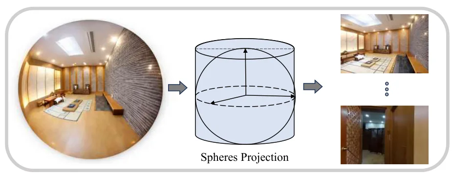
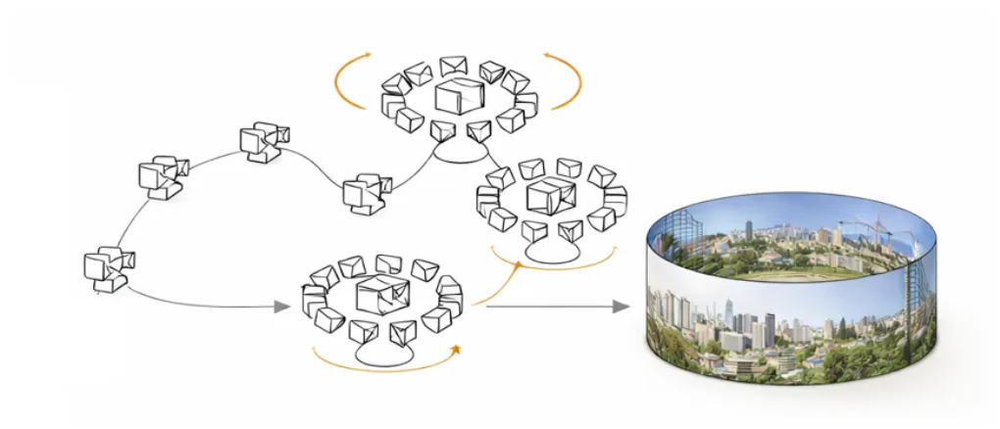
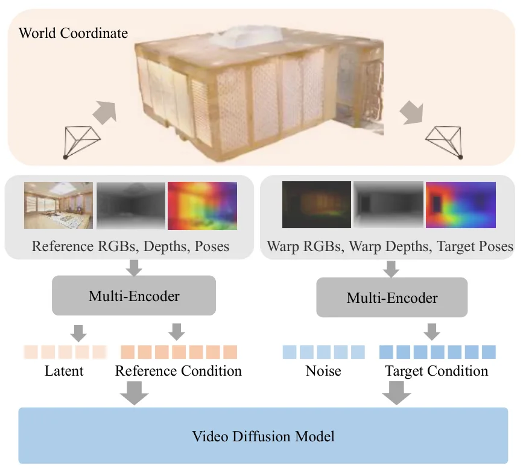
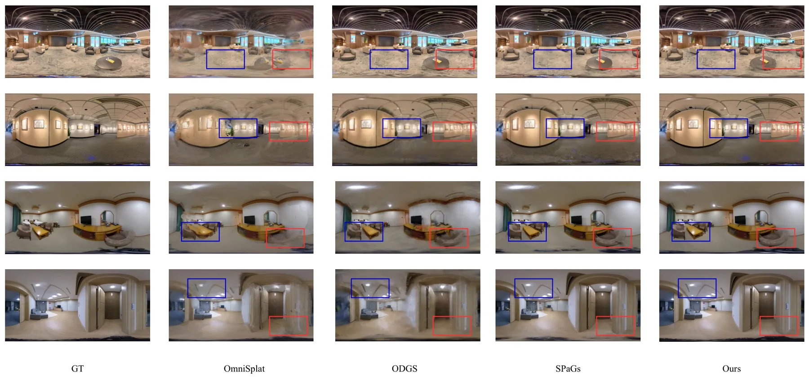
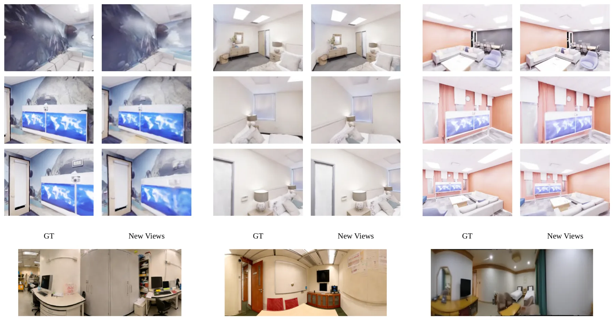
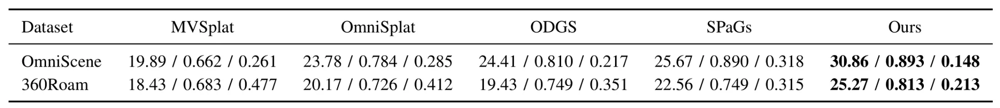
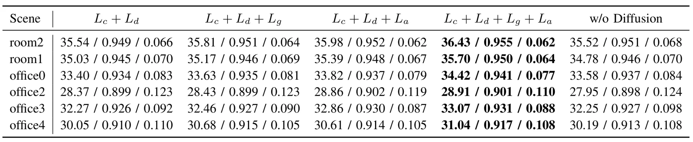
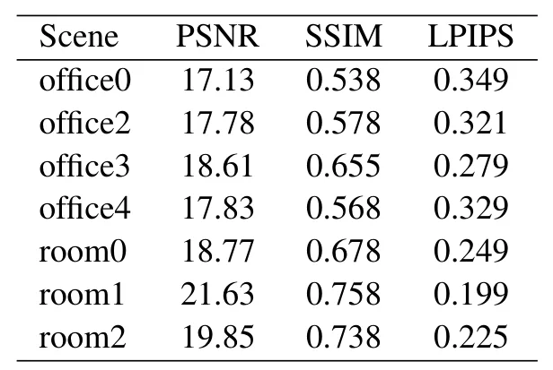

PanoImager：稀疏全景视角下的几何引导新视角合成与重建PanoImager: Geometry-Guided Novel View Synthesis and Reconstruction from Sparse Panoramic Views
与 SLAM 失败场景和稀疏视角三维重建直接相关，尤其适合作为弱视差/旋转主导采集的离线 fallback；需关注先验来源、合成视图偏差和与真实地图坐标系融合。
一句话工作总结
针对弱视差稀疏全景导致 SfM/SLAM 初始化失败的问题，用几何条件补视角和 depth-guided 3DGS 实现 SfM-free 重建。
摘要
稀疏全景图像具备大视场覆盖，但当相机运动以旋转为主、平移视差弱时，传统 SfM/SLAM 初始化常病态且不可靠。PanoImager 提出一个 SfM-free 框架：先把少量全景图分解为局部透视视图，再利用前馈位姿/深度先验、几何条件扩散视图补全和 depth-guided 3DGS 优化来丰富稀疏观测并稳定跨视角一致性。论文在多个 benchmark 上显示极端稀疏输入下的稳定性提升，并将该方法定位为 SfM/SLAM 初始化失败时可运行的离线或后台地图细化组件。
Panoramic sensing offers wide field-of-view coverage, yet 3D reconstruction from sparse panoramas remains challenging under rotation-dominant, weak-parallax motion. In such regimes, SfM/SLAM initialization is often ill-conditioned and unreliable. We present PanoImager, an SfM-free framework that combines feed-forward pose/depth priors, geometry-conditioned diffusion view completion, and depth-guided 3DGS optimization. Given only a few panoramic images, PanoImager decomposes them into local perspective views, synthesizes auxiliary observations to enrich sparse evidence, and stabilizes Gaussian optimization for improved cross-view consistency. Experiments on multiple benchmarks show improved stability under extreme sparsity, suggesting PanoImager as an offline/background component for map refinement when SfM/SLAM fails to initialize.
中文解读摘录
- 英文题名：SatSplatDiff: Geometry-preserving generative refinement for high-fidelity satellite Gaussian Splatting
- 作者：Jiyong Kim, Shuang Song, Ronjgun Qin
- 类别/来源：cs.CV；23 pages, 15 figures；采集 score=10；阅读优先级=8.2/10。
- 一句话总结：在 SatSplat 的摄影测量 DSM 初始化与 2DGS 阴影建模基础上，加入深度监督、多尺度几何细化和 shadow-guided generative refinement，试图提升卫星 3DGS 外观质量同时抑制扩散式细化带来的几何幻觉。
- 为什么值得看：卫星/航测场景的视角通常集中在顶部，建筑立面监督不足，3DGS 容易出现洞、立面不稳定和跨 tile 不一致。本文强调“生成式增强不能破坏几何一致性”，用几何计算阴影图约束监督图像更新；摘要报告 IARPA2016/DFC2019 上几何 MAE 最高降低 18%、FID-CLIP 改善 28–45%、可达 5x 分辨率增强，并给出源码
https://github.com/GDAOSU/SatSplatDiff。建议重点复核代码完整度、DSM/阴影先验依赖、跨 tile 泛化和是否存在外观 hallucination。 - 标签：卫星三维重建、3DGS、生成式细化、几何一致性
- 链接：abs / PDF
图表/页面预览

{kind=link}

{kind=link}

{kind=link}

{kind=link}

{kind=link}

{kind=link}

{kind=link}

{kind=link}
